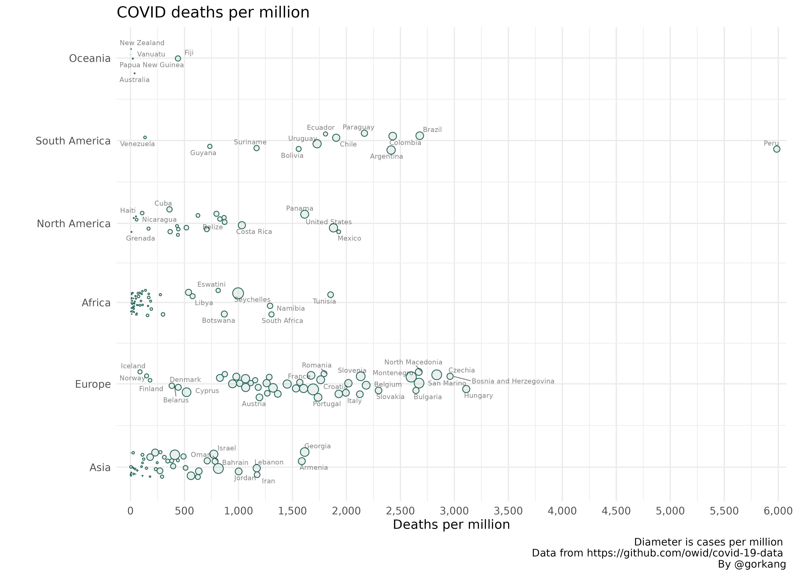

The goal of linearpackcircles is to create circle packing visualizations along a linear scale. It uses {packcircles} as a backend.
You can install the development version with remotes::install_github("gorkang/linearpackcircles"). Please report any problems you find in the Issues Github page.
Example plot
With the OWID dataset we can create a plot showing how total_deaths_per_million changes by continent and location (i.e. country), using total_cases_per_million for the circle diameter.
# remotes::install_github("gorkang/linearpackcircles")
# Libraries and functions
library(readr)
library(dplyr)
library(ggplot2)
library(linearpackcircles)
# Data
DF = read_csv("https://raw.githubusercontent.com/owid/covid-19-data/master/public/data/owid-covid-data.csv", show_col_types = FALSE) %>%
filter(date == max(date)) # Keep only most recent data
# Create Plot
plot1 = linearpackcircles(DF,
ID_var = "location",
group_var = "continent",
area_var = "total_cases_per_million",
x_var = "total_deaths_per_million",
separation_factor = 200,
width_plot = 2000,
height_group = 100,
label_circles = TRUE,
max_overlaps = 8,
size_text = 2)
# Add title, caption...
plot1 +
labs(title = "COVID deaths per million",
x = "Deaths per million",
caption = "Diameter is cases per million \n
Data from https://github.com/owid/covid-19-data \n
By @gorkang")
